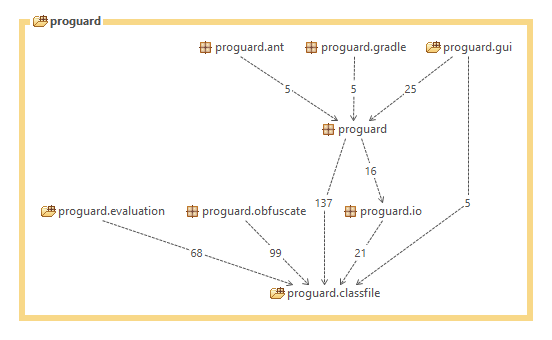
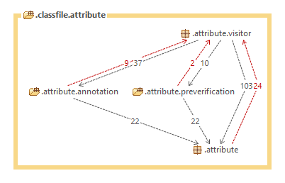

Introduzione
La 5.0 del sistema software presenta una reingegnerizzazione del modello architetturale.
Inoltre, supporta nuove funzionalità:
- Integrazione in un processo di build Gradle;
- Distribuzione dei file attraverso i repository Maven;
- Supporto per Java 8;
- Conversione dei file .jar in file eseguibili su dispositivi Android;
- Conversione dei file .jar in file eseguibili su dispositivi Blackberry.

Infine, il sistema viene anche distribuito come parte integrante dell'android SDK.
Architettura SW
Il modello architetturale della versione 5.0 è stato reso conforme al relativo pattern, tornando allo schema adottato a partire dalla versione 3.0. Nella figura sottostante viene mostrata l'architettura.

A seguito della reingegnerizzazione molti componenti sono stati accorpati per elevare il grado di coesione sia del rispettivo livello sia dei componenti. La modifica significativa ha previsto lo spostamento del package di preverifica al livello Business Model
